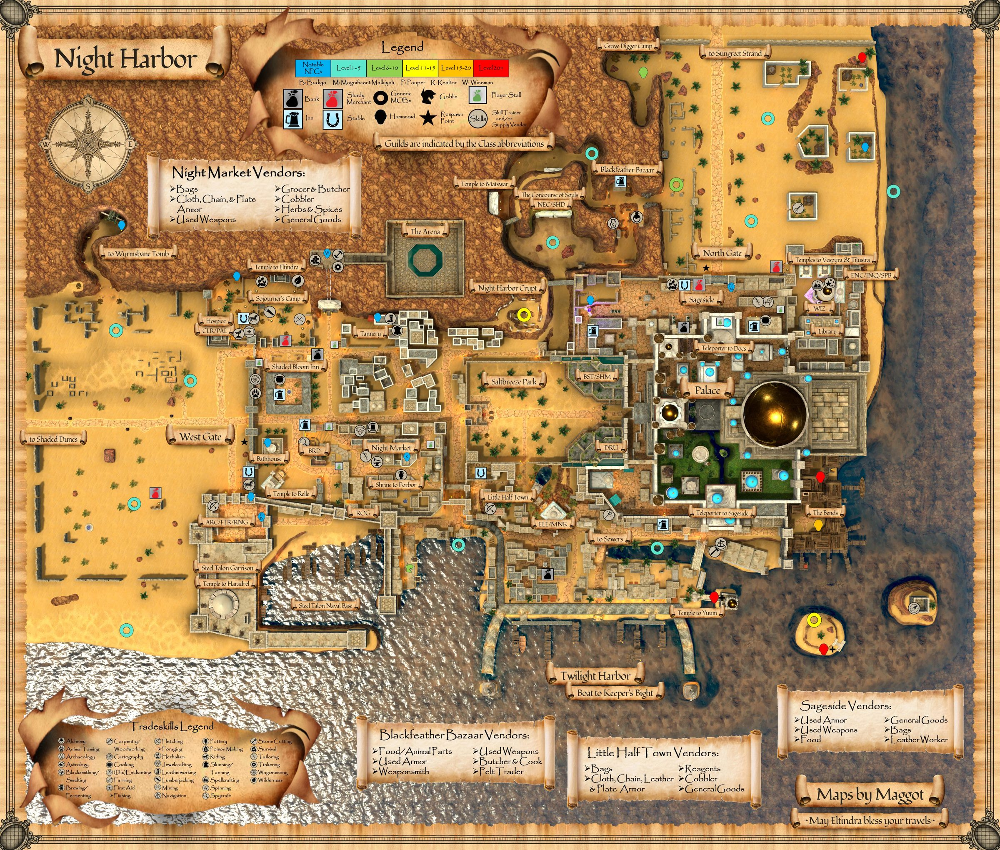
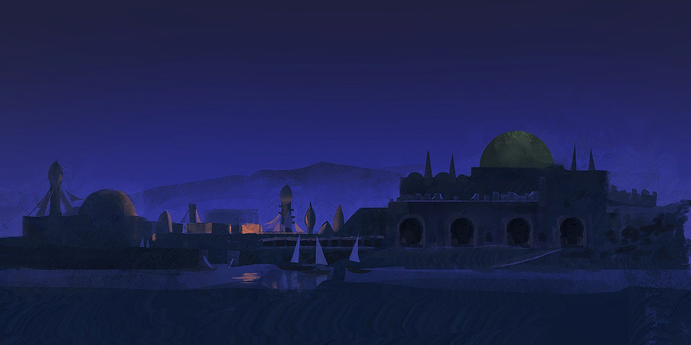

Night Harbor
Night Harbor is the seat of power for the Langsdorfian League, a confederacy of guilds with a near monopoly on trade and transportation throughout Aêthoril. ; The Langsdorfian League and the Seafarers Consortium established Night Harbor as part of the twilight accord.
Patch 0.30.2.8 (Module 1 Patch 11): "Night Harbor has been reunited into one big zone" (it had been split into East/West since 0.30.0.1). Older notes that mention NH East/West zone lines are out of date.
For a Shaman: the Shaman guild is the Seekers of the Lost Eye in Saltbreeze Park (below the Great Guild Hall) — starter quest giver Errol Shrewtender (see Shaman Starter Quest (Night Harbor)). The Crypt (day = beetles/bats, night = skeletons, mobs 10–16) is the classic level 10–16 camp for slow + DoT play.
Map


Named mobs
| Named | Lvl | Race / class | Where | Known loot (hover) |
|---|---|---|---|---|
| A sanguine bat | 12 | Bat | Crypt (Day) | Bloodied Engraved Rune, Sanguine Bat Tooth, Crimson Choker, Sanguine Wildsteps, Wand of Life Drain |
| A pristine beetle | 13 | Beetle | Crypt (Day) | Bloodied Engraved Rune, Pristine Scarab Mask, Beetlewing Cinch, Perfect Beetleshell Gauntlets |
| a noble skeleton | 13 | Skeleton | Crypt (Night) | Catacomb Silk, Boneyard Greaves, Noble Bone Earring |
| An old scarab | 14 | Beetle | Crypt (Day) | Bloodied Engraved Rune, Dusty Chitin Bracer |
| a bejeweled skeleton | 14 | Skeleton | Crypt (Night) | Emerald-Rim Pauldrons, Emerald Encrusted Ring, Sepulcher Gauntlets, Cryptkeeper's Hauberk |
| An ornate beetle | 15 | Beetle | Crypt (Day) | Bloodied Engraved Rune, Ornate Chitin Shield |
| a majestic skeleton | 15 | Skeleton | Crypt (Night) | Fire Emerald Pendant |
| a crowned skeleton | 16 | Skeleton | Crypt (Night) | Time Worn Crown |
| Cormac Renshaw | ~17 | Human / Ranger | The Bends | Ragged Leather Gloves, Seafarer's Shroud |
| Aide Aida | ~35 | Human | Claw Compound | Ward of Wisdom, Gilded Spellbook, Dappled Hide Yoke |
| Pasha Patrice | ~35 | Human | Claw Compound | Pasha's Blade, Pasha's Favor, Gilded Claw Cloak, Gilded Keyring, Pasha Patrice's Head |
| Jailer Benedict | ~40 | Human | Pale Guard Tower | Shadowstitch Leggings, Shadowstitch Handwraps |
| a robed figure | 40 | Human | Pale Guard Tower | Fine Black Robe |
| a pale cook | ~40 | Human | Pale Guard Tower | Eclipse Cleaver |
| Captain Caspian | ~42-44 | Human | Pale Guard Tower | Moonveil Bracer, Thirstbound Grips |
| Manciple Daphne | ~42-44 | Human / Enchanter | Pale Guard Tower | Charmweaver Robe |
| Sima Filipa | 44 | Human | Pale Guard Tower | Sima's Ledgerband |
| Victualler Veera | 44 | Human | Pale Guard Tower | Phantom Stein, Twilight Cap |
| Grubbfist | - | Outside North Gate | Grubbfist's Smasher | |
| Vikar Brask | - | The Bends | Ragged Leather Cloak, Battleforged Plate Belt | |
| Darius Brask | - | The Bends | Cognitive Wristguard, Interrogator's Clasp | |
| Eamon Kassir | - | The Bends | Savage Heartplate |
Mobs & NPCs (camps by level)
Rows with a level are huntable camps; rows without are usually town NPCs or not yet documented.
| Name | Lvl | Race | Class | Where | Notes |
|---|---|---|---|---|---|
| a desert bat | 1 | Bat | - | Noob Yard | |
| a desert bat | 1 | Bat | - | Noob Yard | |
| a desert bat | 1 | Bat | - | Noob Yard | |
| a jackal pup | 1 | Jackal | - | Noob Yard | |
| a large rat | 1 | Rat | - | Noob Yard | |
| a large rat | 1 | Rat | - | Noob Yard | |
| a large rat | 1 | Rat | - | Noob Yard | |
| a rotting skeleton | 1 | Skeleton | - | Noob Yard | |
| a rotting skeleton | 1 | Skeleton | - | Noob Yard | |
| a rotting skeleton | 1 | Skeleton | - | Noob Yard | |
| a fire beetle | 2 | Beetle | - | Noob Yard | |
| a fire beetle | 2 | Beetle | - | Noob Yard | |
| a spiderling | 2 | Spider | - | Noob Yard | |
| a spiderling | 2 | Spider | - | Noob Yard | |
| an ashira scout | 2 | Ashira | - | Noob Yard | |
| an ashira scout | 2 | Ashira | - | Noob Yard | |
| An emissary | 3-4 | Human | Fighter | Claw Compound | Quest NPC |
| Noel Klares | 3 | Human | Fighter | Noel Klares' Ring | Guard | |
| a dunes scarab | 3 | Scarab | - | Noob Yard | |
| a dunes scarab | 3 | Scarab | - | Noob Yard | |
| a curious jackal | 4 | Ashira | - | Noob Yard | |
| a curious jackal | 4 | Ashira | - | Noob Yard | |
| a jackal | 4 | Jackal | - | Noob Yard | |
| a jackal | 4 | Jackal | - | Noob Yard | |
| a goblin troublemaker | 9 | - | - | Docks | |
| a catacombs rat | 10 | Rat | - | Crypt (Day) | Drops Chunk of Diseased Meat |
| a diseased bat | 10 | Bat | - | Crypt (Day) | Drops Chunk of Diseased Meat |
| a goblin squatter | 10 | - | - | Docks | |
| a dusty scarab | 11 | Scarab | - | Crypt (Day) | |
| Whiskey | ~12 | Wolf | - | - | |
| a cracked beetle | 12 | Scarab | - | Crypt (Day) | |
| a decrepit skeleton | 12 | Skeleton | - | Crypt (Night) | |
| a hardened scarab | 13 | Scarab | - | Crypt (Day) | |
| a risen skeleton | 13 | Skeleton | - | Crypt (Night) | |
| a diseased beetle | 14 | Scarab | - | Crypt (Day) | Drops Chunk of Diseased Meat |
| a stumbling skeleton | 14 | Skeleton | - | Crypt (Night) | |
| Jumthem | ~15 | - | - | - | |
| Mayana | 15 | - | - | - | |
| a cackling skeleton | 15 | Skeleton | - | Crypt (Night) | |
| Guardian Crepus | 16-18 | Wolf | - | Hidden Cultist Cave | (Only Spawns at Night?) |
| Guardian Noctus | 16-18 | Wolf | - | Hidden Cultist Cave | (Only Spawns at Night?) |
| Shon Ibn Lail | 16-18 | Human | - | Hidden Cultist Cave | |
| a mad prophet | 16-18 | Human | - | Hidden Cultist Cave | PH for Shon Ibn Lail |
| a drunken dockworker | ~17 | - | - | - | |
| a drunken thug | ~18 | - | - | - | |
| a sassy smuggler | ~18 | - | - | - | |
| a skeletal priest | 18-19 | Skeleton | - | Crypt (Night) | |
| a young privateer | ~19 | - | - | - | |
| a young mercenary | 20+ | - | - | - | |
| Malchiok the Priest | 25-26 | Skeleton | - | Crypt (Night) | Named Mob |
| a threatening figure | 25 | Human | - | - | |
| a Claw aid | ~35 | Human | - | Claw Compound | |
| a Claw blackguard | ~35 | Human | - | Claw Compound | |
| a Claw enforcer | ~35 | Human | - | Claw Compound | |
| a Claw henchman | ~35 | Human | - | Claw Compound | |
| a Claw rhetor | ~35 | Human | Elementalist | Claw Compound | |
| a Claw shafi | ~35 | Human | - | Claw Compound | |
| a Claw steward | ~35 | Human | - | Claw Compound | |
| a Claw vilicus | ~35 | Human | - | Claw Compound | |
| Pale Foreman | 40 | Human | - | Pale Guard Tower | Named Mob |
| a grotto bat | 40 | Bat | - | Pale tunnels | Vampire Bat Hide |
| a pale assistant | 40 | Human | - | Pale Guard Tower | |
| a pale captor | 40 | Human | - | Pale Guard Tower | |
| a pale guard | 40 | Human | - | Pale Guard Tower | |
| a pale jailer | 40 | Human | - | Pale Guard Tower | |
| a pale lieutenant | 40 | Human | - | Pale Guard Tower | PH for Captain Caspian Ironhide Girdle |
| a pale seeker | 40 | Human | - | Pale Guard Tower | |
| a pale senior | 40 | Human | - | Pale Guard Tower | |
| a pale worker | 40 | Human | - | Pale Guard Tower | |
| a robed figure | ~41-43 | Human | - | - | |
| Alchemy Supplies | - | - | Merchant | Blackfeather Bazaar | |
| Archaeology Supplies | - | - | Merchant | Blackfeather Bazaar | |
| Archer Spell Merchant | - | Human | Merchant | - | |
| Assistant Researcher Farland | - | Human | - | Underneath a tent outside Tomb of the Last Wyrmsbane | |
| Bags and Packs | - | Human | Merchant | - | |
| Banker Bargelt | - | Human | Banker | West Bank | |
| Banker Mulaah | - | Human | Banker | West Bank | |
| Beastmaster Spell Merchant | - | Human | Merchant | Seekers of the Lost Eye | |
| Bieito Brightsmile | - | Human | - | - | |
| Blacksmithing Supplies | - | Human | Merchant | - | |
| Blacksmithing Trainer | - | - | Trainer | - | |
| Bones | - | Skeleton | - | Concourse of Souls | |
| Brazzic Durraim | - | Human | - | The Concourse of Souls - First Floor | |
| Brewing Supplies | - | Human | Merchant | - | |
| Bronze Plate Armor | - | - | Merchant | - | |
| Buckmarr Gorstagg | - | Human | - | The Concourse of Souls - First Floor | Necromancer guild quest NPC |
| Captain Eilionoir | - | Human | Merchant | - | |
| Caretaker Etromalled | - | Human | - | Crypt | |
| Chef Argna | - | Dwarf | Trainer | - | |
| Cloth Armor | - | Human | Merchant | - | |
| Commander Otieno | - | Human | - | Red Mantle Keep - Courtyard | Commander of the Red Mantle Unknown |
| Cordellius Hollmion | - | Human | - | - | |
| Customs Inspector Bakari | - | - | - | - | |
| Customs Inspector Ormur | - | Human | Customs Agent | West Bank | |
| Dalinder Grammanoot | - | Gnome | Trainer | First Floor | Cleric guild master |
| Dilshad Abolfazl | - | Merchant | - | Tannery | |
| Elmswood | - | - | - | - | |
| Errol Shrewtender | - | Human | Trainer | Seekers of the Lost Eye | Shaman guild master |
| Errol Shrewtender | - | Human | - | Seekers of the Lost Eye | |
| Everett Graves | - | Human | - | The Concourse of Souls | |
| Exavius Deathwhisper | - | Human | Trainer | The Concourse of Souls - Second Floor | Shadow Knight guild master |
| Faqeer the Pauper | - | - | - | - | |
| Fermenting Supplies | - | - | Merchant | Blackfeather Bazaar | |
| Foss Dunestrider | - | Human | Trainer | Western Gate | Ranger guild master |
| Gatekeeper Nusder | - | Human | - | Red Mantle Keep - Gate to Crypt | Night Harbor Crypt gate key quest giver Unknown |
| General Goods | - | - | Merchant | Blackfeather Bazaar | |
| Guard Aaban | - | Human | - | North Gate Entrance | |
| Guard Adnan | - | Human | - | Night Market Entrance | |
| Guard Amir | - | Human | - | Night Market Entrance | |
| Guard Andreas | - | Human | - | Caravan Gate Guard | |
| Guard Atep | - | Human | - | Red Mantle Keep - Courtyard | |
| Guard Eti | - | Human | - | Shaded Bloom Inn Entrance | |
| Guard Greenbrier | - | - | - | - | |
| Guard Jeskal | - | Human | - | North Gate Entrance | |
| Guard Nicolas | - | Human | - | Shaded Bloom Inn Entrance | |
| Guard Xavier | - | Human | - | Caravan Gate Guard | |
| Guild Registrar (Night Harbor) | - | Human | - | - | Guild Creation NPC |
| Hakim al-Hayati | - | - | - | - | |
| Halrinn Grimsul | - | Human | Merchant | - | |
| Harbormaster Daoud | - | - | - | - | |
| Herbalist Zaarid | - | Human | Trainer | Near Wayfarer's Hospice Entrance | |
| High Inquisitor Lucija | - | Human | - | Red Mantle Keep - Courtyard | |
| Hult Beetlewrangler | - | Human | - | West of Temple to Eltindra | Scarab Beetle Quest giver |
| Innkeeper Nazeel | - | Human | Merchant | - | |
| Jacobin Yeats | - | Human | Trainer | - | Archer guild master |
| Jamee Langris | - | Human | Trainer | - | Bard guild master |
| Jaquim Heyley | - | - | - | - | |
| Jiselle Heyley | - | Human | - | Second Floor | |
| Karif Jamah | - | Human | - | The Bends | |
| Kilia | - | - | - | Blackfeather Bazaar | |
| Leatherworker Haiat | - | Merchant | - | - | |
| Leatherworking Supplies | - | Human | Merchant | - | |
| Leatherworking Trainer | - | Human | Trainer | - | |
| Leila Ghasem | - | Human | Trainer | - | |
| Little Tamsah | - | Crocodile | - | Seekers of the Lost Eye | |
| Lumberjack Bubir | - | Human | Trainer | - | |
| Magnificent Budaiyah | - | - | - | - | |
| Magnificent Malkiyah | - | Human | - | The Concourse of Souls - First Floor | |
| Maheed the Butcher | - | Human | - | - | |
| Malory Moreland | - | Human | - | - | |
| Marius Stanton | - | Human | - | First Floor | |
| Marvion Hallows | - | Human | - | The Concourse of Souls - First Floor | |
| Mason Krulch | - | Ogre | - | Outside Arena | |
| Mason Steinn | - | Dwarf | - | Outside Arena | |
| Masoumeh Akhtar | - | Human | - | Seekers of the Lost Eye | |
| Master Tailor Sansha | - | Human | Merchant | Near the north gate within a building heading towards big purple crystal. | |
| Master Wincog | - | Gnome | Trainer | Wincog's Curious Goods, between Necropolis and Northern Gate. | Enchanter guild master |
| Matheus Griswald | - | Human | - | Within the cave to Tomb of the Last Wyrmsbane | |
| Medic Zafira | - | Human | Trainer | East of Wayfarer's Hospice | |
| Milham the Mad | - | Human | - | North of Wayfarer's Hospice | |
| Miner Falmud | - | Human | Trainer | - | |
| Mirembe Tiifu | - | - | - | - | |
| Monk Spell Merchant | - | - | Merchant | - | |
| Necromancer Reagents | - | Human | Merchant | The Concourse of Souls - Second Floor | |
| Necromancer Spell Merchant | - | Human | Merchant | The Concourse of Souls - Second Floor | |
| Nerida Thinblade | - | - | - | - | |
| Night Terror | - | Bat | Fighter | Noob Yard | Named Mob |
| Njau Hansou | - | Human | - | - | |
| Old Mother Roshan | - | Human | - | Seekers of the Lost Eye | |
| Old Rankle | - | Human | - | Tannery | Quest NPC - Turn in Ashira tails for exp |
| Outdoorsman Gahira | - | Human | Trainer | East of Temple to Eltindra | |
| Patches | - | Jackal | - | - | |
| Pelts and Hides | - | - | Merchant | Blackfeather Bazaar | |
| Petra Gyle | - | Human | Inquisitor | - | |
| Plate Blacksmithing Patterns | - | Human | Merchant | - | |
| Pottery Supplies | Merchant | Human | - | - | |
| Ranger Spell Merchant | - | Human | Merchant | - | |
| Red Mantle Quartermaster | - | Human | - | Red Mantle Keep - Courtyard | |
| Rider Ebraim | - | Human | Trainer | - | |
| Rolan Talmula | - | Human | Trainer | Circle of Scarce Rains | Druid guild master |
| Sahir Muzalal | - | - | - | The Bends | Named Mob |
| Sarithana Valran | - | Human | - | Near Wayfarer's Hospice Entrance | |
| Sarithana Valran | - | Human | - | First Floor | |
| Seamus Three-Knuckle | - | Human | - | - | |
| Sekhmet | - | Human | - | Concourse of Souls | |
| Seraphina Yngestone | - | Human | - | - | |
| Shadow Knight Spell Merchant | - | Human | Merchant | The Concourse of Souls - Second Floor | |
| Shaman Spell Merchant | - | Human | Merchant | Seekers of the Lost Eye | |
| Sinastin Aspenleaf | - | Human | Trainer | City Illuminator's Guild | Rogue guild master |
| Sir Allan Fortir | - | Human | - | First Floor | |
| Sir Leon Kardek | - | Human | - | First Floor | |
| Smelting Supplies | - | - | Merchant | - | |
| Smelting Trainer | - | - | Trainer | - | |
| Spellblade Spell Merchant | - | Human | Merchant | - | |
| Spinning Supplies | - | Human | - | Sageside | |
| Squire Ryland | - | Human | Trainer | First Floor | Paladin Skill Trainer & Quest NPC |
| Stonecutter Selin | - | Human | - | Outside Arena | |
| Stonecutter Sodunn | - | Dwarf | - | Outside Arena | |
| Stumpy the Whistler | - | - | - | - | |
| Sufi the Pauper | - | Human | - | - | |
| Survival Supplies | - | Human | Merchant | Near the north gate along the wall between the big purple crystal and the bank. | |
| Survivalist Faiza | - | Human | Trainer | West of Temple to Eltindra | |
| Tailoring Patterns | - | Human | Merchant | - | |
| Tanner Burhan | - | Merchant | - | Tannery | |
| Tenebrim Tam | - | Human | Trainer | The School of the Fourfold Path | Elementalist guild master |
| Thibald Burlond | - | Human | - | First Floor | |
| Thibald Burlond | - | Human | - | First Floor | |
| Tinkerer Boltia | - | Halfling | - | Outside Arena | |
| Tinkerer Vilsis | - | Human | - | Outside Arena | |
| Trey Fulton | - | Human | Trainer | First Floor | Paladin Guild Master |
| Used Armor Trader | - | - | Merchant | Blackfeather Bazaar | |
| Used Weapons Dealer | - | Human | Merchant | - | |
| Weaponsmith Sielah Zefir | - | - | Merchant | Blackfeather Bazaar | Quest NPC |
| Weaponsmithing Patterns | - | Human | Merchant | - | |
| Weaponsmithing Supplies | - | Human | Merchant | - | |
| Weaponsmithing Trainer | - | Human | Trainer | - | |
| Whispering Wallace | - | Human | - | - | |
| Willy | - | Jackal | - | North of Wayfarer's Hospice | |
| Witcher Sayyaad | - | Human | - | The Concourse of Souls - First Floor | |
| Yorias | - | - | - | - | |
| a Fourfold adept | - | - | - | - | |
| a Red Mantle guard | - | Human | - | Red Mantle Keep - Courtyard | |
| a Red Mantle inquisitor | - | Human | - | Red Mantle Keep - Courtyard | |
| a Reliquary theologist | - | Human | - | Red Mantle Keep - Courtyard | |
| a Seeker initiate | - | Human | - | Seekers of the Lost Eye | |
| a Sojourner | - | Human | - | - | |
| a Sojourner | - | Human | - | - | |
| a Sojourner Lookout | - | Human | - | - | |
| a Sojourner hound | - | Jackal | - | - | |
| a Spellbinder guard | - | Human | - | - | |
| a Steel Talons trainee | - | Human | - | - | |
| a beggar | - | Human | - | - | |
| a black rat | - | - | - | - | |
| a blacksmith's apprentice | - | Human | - | - | |
| a brown rat | - | - | - | - | |
| a butcher | - | - | Merchant | - | |
| a cemetery rat | - | Rat | - | Outside North Gate | |
| a citizen | - | Human | - | - | |
| a cleric scribe | - | Human | Merchant | First Floor | |
| a cobbler | - | Human | Merchant | - | |
| a cobweave spider | - | Spider | - | Abandoned Boatwright's House | Unknown |
| a cobweaver hatchling | - | Spider | - | Abandoned Boatwright's House | Unknown |
| a cook | - | Human | Merchant | - | |
| a crocodile hatchling | - | - | - | - | |
| a cunning privateer | - | - | - | - | |
| a diseased desert bat | - | Bat | - | Outside the cave to Tomb of the Last Wyrmsbane | |
| a diseased jackal | - | Jackal | - | Outside the cave to Tomb of the Last Wyrmsbane | |
| a diseased snake | - | Snake | - | Outside the cave to Tomb of the Last Wyrmsbane | |
| a disgraced friar | - | Human | - | Outside North Gate | |
| a farmer | - | Human | - | - | |
| a fat rat | - | - | - | - | |
| a feisty fishwife | - | - | - | - | |
| a first mate | - | - | - | - | |
| a fisherwoman | - | - | - | - | |
| a fishwife | - | Human | - | - | |
| a galley worker | - | - | - | - | |
| a goblin drunk | - | - | - | Docks | |
| a goblin gambler | - | - | - | Docks | |
| a grain beetle | - | Beetle | - | Under Shaded Bloom Inn | |
| a grave robber | - | Human | - | Outside North Gate | |
| a greasy hound | - | - | - | - | |
| a greedy halfling | - | Halfling | Merchant | Tucked away in a ruined building within the Sojourner's Camp | Greedy Merchant |
| a grocer | - | Human | Merchant | - | |
| a harbor guard | - | - | - | - | |
| a leatherworker | - | Merchant | - | - | |
| a longing sailor | - | - | - | - | |
| a lumberjack | - | Human | Merchant | - | |
| a master blacksmith | - | Human | - | - | |
| a medic | - | Human | Merchant | East of Wayfarer's Hospice | |
| a miner | - | Human | Merchant | - | |
| a naval captain | - | - | - | - | |
| a necropolis guard | - | Human | - | Noob Yard | |
| a paladin instructor | - | Human | Merchant | First Floor | |
| a patrolman | - | Human | - | - | |
| a performer | - | Human | - | - | |
| a priest of Eltindra | - | Human | - | Inside Temple of Eltindra | |
| a priest of Porbor | - | Human | - | By the Shrine to Porbor | |
| a priest of Relle | - | Human | - | Inside Temple of Relle | |
| a priest of The Matswar | - | Human | - | - | |
| a priest of Tilustra | - | Human | - | Night Harbor Sageside | |
| a produce vendor | - | Human | Merchant | - | |
| a reagent vendor | - | Human | Merchant | First Floor | |
| a resident | - | Human | - | - | |
| a resident | - | Human | - | - | |
| a resting blacksmith | - | Human | - | - | |
| a rider | - | Human | Merchant | - | |
| a sailor | - | Human | - | - | |
| a servant boy | - | - | - | Blackfeather Bazaar | |
| a servant girl | - | - | - | Blackfeather Bazaar | |
| a shadow knight recruit | - | Human | - | - | |
| a shifty gnome | - | Gnome | Merchant | Outside the west gates near the old well | Greedy Merchant |
| a skeleton | - | Skeleton | - | Outside North Gate | |
| a small cellar rat | - | Rat | - | Under Shaded Bloom Inn | |
| a sobbing widow | - | - | - | - | |
| a stablemaster | - | Human | Merchant | - | |
| a survivalist | - | Human | Merchant | West of Temple to Eltindra | |
| a tame jackal | - | Jackal | - | - | |
| a tanner | - | Merchant | - | Tannery | |
| a traveler | - | Human | - | - | |
| a visiting elementalist | - | - | - | - | |
| a watchman | - | Human | - | Roaming | |
| a watchman | - | Human | - | - | |
| a watchman | - | Human | - | - | |
| a watersnake | - | Snake | - | - | |
| a wharf rat | - | - | - | - | |
| a wise elder | - | Human | - | Outside Arena | |
| a witch light | - | Wisp | - | Seekers of the Lost Eye | Only at night |
| a young crypt scarab | - | Scarab | - | Noob Yard | |
| an Easthymnite traveler | - | Human | - | - | |
| an ashira warrior | - | Ashira | - | Noob Yard | |
| an exiled researcher | - | Human | - | Outside North Gate | |
| an herbalist | - | Human | Merchant | Near Wayfarer's Hospice Entrance | |
| an innkeeper | - | Human | Merchant | - | |
| an off duty guard | - | Human | - | - | |
| an outdoorsman | - | Human | Merchant | East of Temple to Eltindra | |
| cooking supplies | - | - | Merchant | Blackfeather Bazaar | |
| midshipman | - | - | - | - |
Quests
Gear that drops here
| Slot | Item | Key stats (wiki) | How to get | Lvl | Classes |
|---|---|---|---|---|---|
| Neck | Ashira Scout Necklace | no stats listed on wiki | Quest: Archer Starter Quest (Night Harbor) (-, Night Harbor, min lvl 1) Quest: Monk Starter Quest (Night Harbor) (-, Night Harbor, min lvl 1) Quest: Night Harbor Drop: an ashira scout (lvl 2) — Night Harbor, Noob Yard | 1 | All classes |
| Wrist | Ashira Warrior Bracer | AC 2 | Quest: Ashira Warrior Bracer Quest (Quartermaster Obaid, Night Harbor, min lvl 1) Quest: Fighter Starter Quest (Night Harbor) (-, Night Harbor, min lvl 1) Drop: an ashira spearfisher (lvl -) — Shaded Dunes, - Drop: an ashira warrior (lvl -) — Shaded Dunes, - | 1 | ARC BRD BST CLR DRU FTR INQ MNK PAL RNG ROG SHD SHM SPB |
| Neck | Ashira Warrior Necklace | no stats listed on wiki | Quest: Archer Starter Quest (Night Harbor) (-, Night Harbor, min lvl 1) Quest: Night Harbor Drop: an ashira warrior (lvl -) — Shaded Dunes, - Drop: an ashira warrior (lvl 6-7) — Sungreet Strand, - | 1 | All classes |
| Bat Wing | no stats listed on wiki | Quest: Druid Starter Quest (Faelindral) (Sylvarya Starveil, Faelindral, min lvl 1) Quest: Druid Starter Quest (Night Harbor) (Rolan Talmula, Night Harbor, min lvl 1) Quest: Ranger Starter Quest (Night Harbor) (-, Night Harbor, min lvl 1) Drop: a desert bat (lvl 1) — Night Harbor, Noob Yard | 1 | DRU ENC RNG SHM WIZ | |
| Bone Chips | no stats listed on wiki | Quest: Bone Chips for Moon Dances (Moon Dances, Faelindral, min lvl 1) Quest: Bone Chips for Squire Ryland (Squire Ryland, Night Harbor, min lvl 1) Quest: Druid Starter Quest (Faelindral) (Sylvarya Starveil, Faelindral, min lvl 1) Quest: Find Delilah's Pet (Delilah, Underdocks, min lvl 1) | 1 | NEC SHD | |
| Primary, Secondary | Cracked Staff | DMG 6 / DLY 33 | Drop: A rotting skeleton (lvl 1) — Night Harbor, Noob Yard Drop: a risen skeleton (lvl 13) — Night Harbor, Crypt (Night) Drop: an ashira lookout (lvl -) — Sungreet Strand, - Drop: an ashira warrior (lvl 6-7) — Sungreet Strand, - | 1 | All classes |
| Finger | Cultist's Insignia Ring | no stats listed on wiki | Quest: Cultists in Night Harbor (Njau Hansou, Night Harbor, min lvl 1) Drop: a cultist (lvl unconfirmed) — Night Harbor | 1 | All classes |
| Primary, Secondary, Range, Belt | Fire Beetle Eye | Effect: Fire Beetle Eye (Passive. Must Equip. Level: 1) | Quest: Druid Starter Quest (Faelindral) (Sylvarya Starveil, Faelindral, min lvl 1) Quest: Druid Starter Quest (Night Harbor) (Rolan Talmula, Night Harbor, min lvl 1) Quest: Fighter Starter Quest (Night Harbor) (-, Night Harbor, min lvl 1) Quest: Ranger Starter Quest (Night Harbor) (-, Night Harbor, min lvl 1) | 1 | All classes |
| Fire Beetle Gland | no stats listed on wiki | Quest: Shaman Starter Quest (Night Harbor) (Errol Shrewtender, Night Harbor, min lvl 1) Drop: a fire beetle (lvl 2) — Night Harbor, Noob Yard Drop: a fire beetle (lvl -) — Shaded Dunes, - Drop: a fire beetle (lvl unconfirmed) — Sungreet Strand | 1 | All classes | |
| Finger | Noel Klares' Ring | no stats listed on wiki | Quest: Shadow Knight Starter Quest (Night Harbor) (Exavius Deathwhisper, Night Harbor, min lvl 1) Drop: Noel Klares (lvl 3) — Night Harbor, Noel Klares' Ring | Guard | 1 | All classes |
| Primary, Secondary | Rusty Axe | DMG 6 / DLY 42 | Drop: A skeletal warrior (lvl 4 - 11) — Tomb of the Last Wyrmsbane, - Drop: A skeletal cleric (lvl -) — Tomb of the Last Wyrmsbane, - Drop: A skeletal fighter (lvl 3 - 10) — Tomb of the Last Wyrmsbane, - Drop: a skeletal priest (lvl -) — Tomb of the Last Wyrmsbane, - | 1 | BST FTR INQ PAL RNG SHD SPB |
| Primary | Rusty Battle Axe | DMG 10 / DLY 54 | Drop: A rotting skeleton (lvl 1) — Night Harbor, Noob Yard Drop: an ashira warrior (lvl -) — Night Harbor, Noob Yard Drop: A skeletal warrior (lvl 4 - 11) — Tomb of the Last Wyrmsbane, - Drop: a skeletal deacon (lvl -) — Tomb of the Last Wyrmsbane, - | 1 | BST FTR INQ PAL SHD |
| Primary, Secondary | Rusty Dagger | DMG 4 / DLY 24 | Vendor: A scrap dealer — Evershade Weald; A used weapons dealer — Night Harbor, Shallow Shoals; Evershade Weald Drop: an ashira warrior (lvl 6-7) — Sungreet Strand, - Drop: a Bloodynose quarreler (lvl ~8-10) — Sungreet Strand, Tel Ekir Goblin Entrance Drop: a sullen farmhand (lvl unconfirmed) — Sungreet Strand | 1 | ARC BRD BST ELE ENC FTR INQ NEC RNG ROG SHD SHM SPB WIZ |
| Primary | Rusty Great Scythe | DMG 8 / DLY 46 | Drop: A rotting skeleton (lvl 1) — Night Harbor, Noob Yard Drop: a market peddler (lvl unconfirmed) — Night Harbor Drop: A skeletal warrior (lvl 4 - 11) — Tomb of the Last Wyrmsbane, - Drop: a skeletal monk (lvl -) — Tomb of the Last Wyrmsbane, - | 1 | BST DRU FTR INQ NEC RNG SHD SPB |
| Primary | Rusty Greatsword | DMG 9 / DLY 50 | Drop: a skeleton (lvl unconfirmed) — Shaded Dunes Drop: a stumbling zombie (lvl unconfirmed) — Shaded Dunes Drop: a bandit (lvl 10-13) — Shaded Dunes, - Drop: a smuggler (lvl unconfirmed) — Shaded Dunes | 1 | ARC BRD BST FTR INQ PAL RNG SHD SPB |
| Primary | Rusty Long Spear | DMG 9 / DLY 48 | Drop: an ashira warrior (lvl 6-7) — Sungreet Strand, - Drop: a Bloodynose quarreler (lvl ~8-10) — Sungreet Strand, Tel Ekir Goblin Entrance Drop: an ashira lookout (lvl -) — Sungreet Strand, - Drop: an ashira shaman (lvl -) — Sungreet Strand, - | 1 | ARC BRD BST FTR INQ RNG ROG SHD SHM |
| Primary, Secondary | Rusty Longsword | DMG 6 / DLY 38 | Drop: an ashira shaman (lvl -) — Sungreet Strand, - Drop: an ashira warrior (lvl 6-7) — Sungreet Strand, - Drop: a Bloodynose quarreler (lvl ~8-10) — Sungreet Strand, Tel Ekir Goblin Entrance Drop: an ashira lookout (lvl -) — Sungreet Strand, - | 1 | ARC BRD BST FTR INQ PAL RNG ROG SHD SPB WIZ |
| Primary, Secondary | Rusty Mace | DMG 6 / DLY 40 | Vendor: A scrap dealer — Evershade Weald; A used weapons dealer — Night Harbor, Shallow Shoals; Evershade Weald Drop: an ashira lookout (lvl -) — Sungreet Strand, - Drop: an ashira shaman (lvl -) — Sungreet Strand, - Drop: a Bloodynose quarreler (lvl ~8-10) — Sungreet Strand, Tel Ekir Goblin Entrance | 1 | BRD BST CLR DRU FTR INQ MNK PAL RNG ROG SHD SHM SPB |
| Primary | Rusty Maul | DMG 10 / DLY 52 | Drop: A skeletal cavalier (lvl 6 - 10) — Tomb of the Last Wyrmsbane, - Drop: A skeletal fighter (lvl 3 - 10) — Tomb of the Last Wyrmsbane, - Drop: a skeletal deacon (lvl -) — Tomb of the Last Wyrmsbane, - Drop: a skeletal warrior (lvl 4 - 11) — Tomb of the Last Wyrmsbane, - | 1 | BRD BST CLR DRU FTR INQ MNK PAL RNG ROG SHD SHM SPB |
| Primary, Secondary | Rusty Scimitar | DMG 5 / DLY 36 | Drop: A rotting skeleton (lvl 1) — Night Harbor, Noob Yard Drop: a goblin troublemaker (lvl 9) — Night Harbor, Docks Drop: a stumbling zombie (lvl unconfirmed) — Shaded Dunes Drop: a skeleton (lvl unconfirmed) — Shaded Dunes | 1 | ARC BRD BST DRU FTR INQ PAL RNG ROG SHD SPB WIZ |
| Primary, Secondary | Rusty Shortsword | DMG 4 / DLY 26 | Vendor: A scrap dealer — Evershade Weald; A used weapons dealer — Night Harbor, Shallow Shoals; Evershade Weald Drop: an ashira warrior (lvl 6-7) — Sungreet Strand, - Drop: an ashira lookout (lvl -) — Sungreet Strand, - Drop: a hired thug (lvl 9-10) — Sungreet Strand, Ameen Farm | 1 | ARC BRD BST FTR INQ PAL RNG ROG SHD SHM SPB WIZ |
| Primary, Secondary | Rusty Spear | DMG 5 / DLY 34 | Vendor: A scrap dealer — Evershade Weald; Evershade Weald; a scrap dealer Drop: an ashira warrior (lvl 6-7) — Sungreet Strand, - Drop: an ashira lookout (lvl -) — Sungreet Strand, - Drop: a rotting skeleton (lvl unconfirmed) — Sungreet Strand | 1 | ARC BRD BST FTR INQ RNG ROG SHD SHM |
| Secondary | Rusty Tower Shield | AC 4 | Drop: an ashira lookout (lvl -) — Sungreet Strand, - Drop: a Bloodynose quarreler (lvl ~8-10) — Sungreet Strand, Tel Ekir Goblin Entrance Drop: an ashira warrior (lvl 6-7) — Sungreet Strand, - Drop: a Bloodynose fumer (lvl ~8-10) — Sungreet Strand, Tel Ekir Goblin Entrance | 1 | FTR INQ PAL SHD |
| Primary, Secondary | Rusty Trident | DMG 5 / DLY 32 | Drop: an ashira lookout (lvl -) — Sungreet Strand, - Drop: an ashira warrior (lvl 6-7) — Sungreet Strand, - Drop: a Bloodynose quarreler (lvl ~8-10) — Sungreet Strand, Tel Ekir Goblin Entrance Drop: an ashira shaman (lvl -) — Sungreet Strand, - | 1 | ARC BRD BST FTR INQ RNG ROG SHD SHM |
| Primary | Rusty War Lance | DMG 9 / DLY 48 | Drop: an ashira warrior (lvl 6-7) — Sungreet Strand, - Drop: a hired thug (lvl 9-10) — Sungreet Strand, Ameen Farm Drop: a rotting skeleton (lvl unconfirmed) — Sungreet Strand Drop: an ashira lookout (lvl -) — Sungreet Strand, - | 1 | FTR INQ PAL SHD |
| Primary, Secondary | Rusty Warhammer | DMG 4 / DLY 30 | Drop: A skeletal fighter (lvl 3 - 10) — Tomb of the Last Wyrmsbane, - Drop: A skeletal marksman (lvl -) — Tomb of the Last Wyrmsbane, - Drop: a skeletal warrior (lvl 4 - 11) — Tomb of the Last Wyrmsbane, - Drop: a skeletal monk (lvl -) — Tomb of the Last Wyrmsbane, - | 1 | BRD BST CLR DRU FTR INQ MNK PAL RNG ROG SHD SHM SPB |
| Waist | Tattered Cloth Belt | AC 1 | Drop: A rotting skeleton (lvl 1) — Night Harbor, Noob Yard Drop: a cackling skeleton (lvl 15) — Night Harbor, Crypt (Night) Drop: a goblin troublemaker (lvl 9) — Night Harbor, Docks Drop: an ashira scout (lvl 2) — Night Harbor, Noob Yard | 1 | All classes |
| Feet | Tattered Cloth Boots | AC 1 | Drop: A rotting skeleton (lvl 1) — Night Harbor, Noob Yard Drop: an ashira scout (lvl 2) — Night Harbor, Noob Yard Drop: a goblin drunk (lvl -) — Night Harbor, Docks Drop: a goblin squatter (lvl 10) — Night Harbor, Docks | 1 | All classes |
| Wrist | Tattered Cloth Bracer | AC 1 | Drop: A skeletal fighter (lvl 3 - 10) — Tomb of the Last Wyrmsbane, - Drop: A skeletal warrior (lvl 4 - 11) — Tomb of the Last Wyrmsbane, - Drop: A skeletal cleric (lvl -) — Tomb of the Last Wyrmsbane, - Drop: A skeletal knight (lvl -) — Tomb of the Last Wyrmsbane, - | 1 | All classes |
| Head | Tattered Cloth Cap | AC 1 | Drop: A rotting skeleton (lvl 1) — Night Harbor, Noob Yard Drop: a goblin squatter (lvl 10) — Night Harbor, Docks Drop: a goblin troublemaker (lvl 9) — Night Harbor, Docks Drop: a goblin drunk (lvl -) — Night Harbor, Docks | 1 | All classes |
| Back | Tattered Cloth Cape | AC 1 | Drop: A rotting skeleton (lvl 1) — Night Harbor, Noob Yard Drop: a risen skeleton (lvl 13) — Night Harbor, Crypt (Night) Drop: a cackling skeleton (lvl 15) — Night Harbor, Crypt (Night) Drop: a goblin drunk (lvl -) — Night Harbor, Docks | 1 | All classes |
| Hands | Tattered Cloth Gloves | AC 1 | Drop: A rotting skeleton (lvl 1) — Night Harbor, Noob Yard Drop: a begrudging farmer (lvl unconfirmed) — Night Harbor Drop: a stumbling skeleton (lvl 14) — Night Harbor, Crypt (Night) Drop: a goblin drunk (lvl -) — Night Harbor, Docks | 1 | All classes |
| Neck | Tattered Cloth Gorget | AC 1 | Drop: A rotting skeleton (lvl 1) — Night Harbor, Noob Yard Drop: a goblin drunk (lvl -) — Night Harbor, Docks Drop: a goblin troublemaker (lvl 9) — Night Harbor, Docks Drop: a goblin squatter (lvl 10) — Night Harbor, Docks | 1 | All classes |
| Shoulders | Tattered Cloth Mantle | AC 1 | Drop: A skeletal fighter (lvl 3 - 10) — Tomb of the Last Wyrmsbane, - Drop: A skeletal monk (lvl -) — Tomb of the Last Wyrmsbane, - Drop: A skeletal warrior (lvl 4 - 11) — Tomb of the Last Wyrmsbane, - Drop: A skeletal defender (lvl -) — Tomb of the Last Wyrmsbane, - | 1 | All classes |
| Legs | Tattered Cloth Pantaloons | AC 1 | Drop: A skeletal fighter (lvl 3 - 10) — Tomb of the Last Wyrmsbane, - Drop: A skeletal warrior (lvl 4 - 11) — Tomb of the Last Wyrmsbane, - Drop: A skeletal defender (lvl -) — Tomb of the Last Wyrmsbane, - Drop: A skeletal cavalier (lvl 6 - 10) — Tomb of the Last Wyrmsbane, - | 1 | All classes |
| Chest | Tattered Cloth Robe | AC 2 | Drop: A rotting skeleton (lvl 1) — Night Harbor, Noob Yard Drop: a cackling skeleton (lvl 15) — Night Harbor, Crypt (Night) Drop: a goblin squatter (lvl 10) — Night Harbor, Docks Drop: a goblin gambler (lvl -) — Night Harbor, Docks | 1 | ELE ENC NEC WIZ |
| Shirt | Tattered Cloth Shirt | no stats listed on wiki | Drop: A rotting skeleton (lvl 1) — Night Harbor, Noob Yard Drop: a stumbling skeleton (lvl 14) — Night Harbor, Crypt (Night) Drop: a cackling skeleton (lvl 15) — Night Harbor, Crypt (Night) Drop: a goblin troublemaker (lvl 9) — Night Harbor, Docks | 1 | All classes |
| Chest | Tattered Cloth Tunic | AC 2 | Drop: A skeletal cleric (lvl -) — Tomb of the Last Wyrmsbane, - Drop: A skeletal fighter (lvl 3 - 10) — Tomb of the Last Wyrmsbane, - Drop: A skeletal warrior (lvl 4 - 11) — Tomb of the Last Wyrmsbane, - Drop: A skeletal priest (lvl -) — Tomb of the Last Wyrmsbane, - | 1 | All classes |
| Face | Tattered Cloth Veil | AC 1 | Drop: A rotting skeleton (lvl 1) — Night Harbor, Noob Yard Drop: a cackling skeleton (lvl 15) — Night Harbor, Crypt (Night) Drop: a goblin drunk (lvl -) — Night Harbor, Docks Drop: a goblin squatter (lvl 10) — Night Harbor, Docks | 1 | All classes |
| Primary, Secondary | Torch | Effect: Torch (Passive. Must Equip. Level: 1) | Quest: Pests at the Farm (Farmer Ammar, Night Harbor, min lvl 1) Vendor: A goods merchant — Night Harbor, Shallow Shoals; A greedy halfling — Night Harbor; A shifty elf — Evershade Weald Crafted: Survival (trivial X) Drop: A rotting skeleton (lvl 1) — Night Harbor, Noob Yard | 1 | All classes |
| Secondary | Worn Buckler | AC 2 | Drop: an ashira shaman (lvl -) — Sungreet Strand, - Drop: an ashira lookout (lvl -) — Sungreet Strand, - Drop: an ashira warrior (lvl 6-7) — Sungreet Strand, - Drop: a Bloodynose scarer (lvl ~8-10) — Sungreet Strand, Tel Ekir Goblin Entrance | 1 | BRD BST CLR DRU FTR INQ PAL RNG ROG SHD SHM SPB |
| Primary | Worn Great Staff | DMG 10 / DLY 39 | Drop: an ashira shaman (lvl -) — Sungreet Strand, - Drop: an ashira warrior (lvl 6-7) — Sungreet Strand, - Drop: a Bloodynose quarreler (lvl ~8-10) — Sungreet Strand, Tel Ekir Goblin Entrance Drop: a smarmy hunter (lvl unconfirmed) — Sungreet Strand | 1 | BST CLR DRU ELE ENC FTR MNK NEC PAL SHM SPB WIZ |
| Bag | Aashir's Journal | no stats listed on wiki | Quest: Escort Head Researcher Aashir (Head Researcher Aashir, Shaded Dunes, min lvl 15) Quest: Rogue Starter Quest (Night Harbor) (Sinastin Aspenleaf, Night Harbor, min lvl 1) Drop: a cultist (lvl unconfirmed) — Night Harbor | 1 | class unconfirmed |
| Secondary | Rusty Kite Shield | AC 3 | Drop: an ashira shaman (lvl -) — Sungreet Strand, - Drop: an ashira warrior (lvl 6-7) — Sungreet Strand, - Drop: a Bloodynose scarer (lvl ~8-10) — Sungreet Strand, Tel Ekir Goblin Entrance Drop: a filthy henchman (lvl unconfirmed) — Sungreet Strand | 3 | BRD CLR FTR INQ PAL RNG SHD |
| Waist | Tattered Rawhide Belt | AC 1 | Drop: A skeletal warrior (lvl 4 - 11) — Tomb of the Last Wyrmsbane, - Drop: A skeletal monk (lvl -) — Tomb of the Last Wyrmsbane, - Drop: a skeletal cleric (lvl -) — Tomb of the Last Wyrmsbane, - Drop: a risen zombie (lvl -) — Tomb of the Last Wyrmsbane, - | 3 | ARC BRD BST CLR DRU FTR INQ MNK PAL RNG ROG SHD SHM SPB |
| Back | Tattered Rawhide Cloak | AC 1 | Drop: A skeletal marksman (lvl -) — Tomb of the Last Wyrmsbane, - Drop: A skeletal warrior (lvl 4 - 11) — Tomb of the Last Wyrmsbane, - Drop: A skeletal cavalier (lvl 6 - 10) — Tomb of the Last Wyrmsbane, - Drop: A skeletal cleric (lvl -) — Tomb of the Last Wyrmsbane, - | 3 | ARC BRD BST CLR DRU FTR INQ MNK PAL RNG ROG SHD SHM SPB |
| Finger | Ring of the Pauper | AC 1, HP +5 | Drop: a black widow (lvl 4-5) — Evershade Weald, - Drop: a gloom widow (lvl 9-11) — Blacktide Bay, - Drop: a cobweaver hatchling (lvl -) — Night Harbor, Abandoned Boatwright's House Drop: a cobweaver spider (lvl unconfirmed) — Night Harbor | 4 | All classes |
| Feet | Tattered Rawhide Boots | AC 2 | Drop: A skeletal warrior (lvl 4 - 11) — Tomb of the Last Wyrmsbane, - Drop: A skeletal cleric (lvl -) — Tomb of the Last Wyrmsbane, - Drop: A skeletal archer (lvl -) — Tomb of the Last Wyrmsbane, - Drop: A skeletal cavalier (lvl 6 - 10) — Tomb of the Last Wyrmsbane, - | 4 | ARC BRD BST CLR DRU FTR INQ MNK PAL RNG ROG SHD SHM SPB |
| Wrist | Tattered Rawhide Bracer | AC 2 | Drop: A skeletal warrior (lvl 4 - 11) — Tomb of the Last Wyrmsbane, - Drop: A skeletal defender (lvl -) — Tomb of the Last Wyrmsbane, - Drop: A skeletal marksman (lvl -) — Tomb of the Last Wyrmsbane, - Drop: a skeletal priest (lvl -) — Tomb of the Last Wyrmsbane, - | 4 | ARC BRD BST CLR DRU FTR INQ MNK PAL RNG ROG SHD SHM SPB |
| Head | Tattered Rawhide Cap | AC 2 | Drop: A skeletal warrior (lvl 4 - 11) — Tomb of the Last Wyrmsbane, - Drop: A skeletal marksman (lvl -) — Tomb of the Last Wyrmsbane, - Drop: a skeletal knight (lvl -) — Tomb of the Last Wyrmsbane, - Drop: a risen zombie (lvl -) — Tomb of the Last Wyrmsbane, - | 4 | ARC BRD BST CLR DRU FTR INQ MNK PAL RNG ROG SHD SHM SPB |
| Hands | Tattered Rawhide Gloves | AC 2 | Drop: A skeletal warrior (lvl 4 - 11) — Tomb of the Last Wyrmsbane, - Drop: A skeletal priest (lvl -) — Tomb of the Last Wyrmsbane, - Drop: A skeletal marksman (lvl -) — Tomb of the Last Wyrmsbane, - Drop: a skeletal monk (lvl -) — Tomb of the Last Wyrmsbane, - | 4 | ARC BRD BST CLR DRU FTR INQ MNK PAL RNG ROG SHD SHM SPB |
| Neck | Tattered Rawhide Gorget | AC 1 | Drop: a skeleton (lvl unconfirmed) — Sungreet Strand Drop: an ashira warrior (lvl 6-7) — Sungreet Strand, - Drop: a Bloodynose quarreler (lvl ~8-10) — Sungreet Strand, Tel Ekir Goblin Entrance Drop: a hired thug (lvl 9-10) — Sungreet Strand, Ameen Farm | 4 | ARC BRD BST CLR DRU FTR INQ MNK PAL RNG ROG SHD SHM SPB |
| Legs | Tattered Rawhide Leggings | AC 2 | Drop: A skeletal warrior (lvl 4 - 11) — Tomb of the Last Wyrmsbane, - Drop: A skeletal monk (lvl -) — Tomb of the Last Wyrmsbane, - Drop: A skeletal defender (lvl -) — Tomb of the Last Wyrmsbane, - Drop: A skeletal priest (lvl -) — Tomb of the Last Wyrmsbane, - | 4 | ARC BRD BST CLR DRU FTR INQ MNK PAL RNG ROG SHD SHM SPB |
| Face | Tattered Rawhide Mask | AC 1 | Drop: A skeletal marksman (lvl -) — Tomb of the Last Wyrmsbane, - Drop: A skeletal warrior (lvl 4 - 11) — Tomb of the Last Wyrmsbane, - Drop: A skeletal cavalier (lvl 6 - 10) — Tomb of the Last Wyrmsbane, - Drop: a skeletal monk (lvl -) — Tomb of the Last Wyrmsbane, - | 4 | ARC BRD BST CLR DRU FTR INQ MNK PAL RNG ROG SHD SHM SPB |
| Shoulders | Tattered Rawhide Shoulderpads | AC 2 | Drop: A skeletal warrior (lvl 4 - 11) — Tomb of the Last Wyrmsbane, - Drop: A risen zombie (lvl -) — Tomb of the Last Wyrmsbane, - Drop: A skeletal marksman (lvl -) — Tomb of the Last Wyrmsbane, - Drop: A skeletal priest (lvl -) — Tomb of the Last Wyrmsbane, - | 4 | ARC BRD BST CLR DRU FTR INQ MNK PAL RNG ROG SHD SHM SPB |
| Chest | Tattered Rawhide Tunic | AC 3 | Drop: A skeletal marksman (lvl -) — Tomb of the Last Wyrmsbane, - Drop: A skeletal warrior (lvl 4 - 11) — Tomb of the Last Wyrmsbane, - Drop: a skeletal vicar (lvl -) — Tomb of the Last Wyrmsbane, - Drop: a risen zombie (lvl -) — Tomb of the Last Wyrmsbane, - | 4 | ARC BRD BST CLR DRU FTR INQ MNK PAL RNG ROG SHD SHM SPB |
| Shirt | Tattered Rawhide Vest | no stats listed on wiki | Drop: A skeletal warrior (lvl 4 - 11) — Tomb of the Last Wyrmsbane, - Drop: A skeletal knight (lvl -) — Tomb of the Last Wyrmsbane, - Drop: a skeletal priest (lvl -) — Tomb of the Last Wyrmsbane, - Drop: a skeletal defender (lvl -) — Tomb of the Last Wyrmsbane, - | 4 | ARC BRD BST CLR DRU FTR INQ MNK PAL RNG ROG SHD SHM SPB |
| Primary, Secondary | Corroded Bronze Axe | DMG 9 / DLY 42 | Drop: a bulky bandit (lvl 26) — Scarwood, - Drop: a risen commander (lvl -) — Shaded Dunes, Ancient Crypt Entrance Drop: an ashira warrior (lvl 6-7) — Sungreet Strand, - Drop: an ashira preserver (lvl -) — Sungreet Strand, - | 6 | BST FTR INQ PAL RNG SHD SPB |
| Primary | Corroded Bronze Battle Axe | DMG 14 / DLY 54 | Drop: an ashira huntmaster (lvl 16-18) — Tel Ekir, - Drop: an ashira ain guard (lvl -) — Tel Ekir, - Drop: a Bloodynose spooker (lvl ~13-14) — Tel Ekir, - Drop: a skeletal acolyte (lvl 17) — Ancient Crypt, - | 6 | BST FTR INQ PAL SHD |
| Feet | Corroded Bronze Chain Boots | AC 5 | Drop: an ashira mystic (lvl -) — Tel Ekir, - Drop: a Bloodynose sergeant (lvl 15) — Tel Ekir, - Drop: a Bloodchain guard (lvl unconfirmed) — Blacktide Bay Drop: a skeletal guard (lvl ~12-15) — Ancient Crypt, - | 6 | BRD CLR FTR INQ PAL RNG ROG SHD SHM |
| Hands | Corroded Bronze Chain Gloves | AC 7 | Drop: an ashira ain guard (lvl -) — Tel Ekir, - Drop: a fallen sentinel (lvl 19) — Ancient Crypt, - Drop: an ashira warrior (lvl 6-7) — Sungreet Strand, - Drop: an ashira luminary (lvl unconfirmed) — Sungreet Strand | 6 | BRD CLR FTR INQ PAL RNG ROG SHD SHM |
| Neck | Corroded Bronze Chain Gorget | AC 2 | Drop: an ashira huntmaster (lvl 16-18) — Tel Ekir, - Drop: an ashira mystic (lvl -) — Tel Ekir, - Drop: a Bloodynose schemer (lvl unconfirmed) — Tel Ekir Drop: an ashira warrior (lvl 6-7) — Sungreet Strand, - | 6 | BRD CLR FTR INQ PAL RNG ROG SHD SHM |
| Legs | Corroded Bronze Chain Leggings | AC 8 | Drop: an ashira ain guard (lvl -) — Tel Ekir, - Drop: a Bloodynose captain (lvl 16) — Tel Ekir, - Drop: a Bloodynose schemer (lvl unconfirmed) — Tel Ekir Drop: a trail bandit (lvl 26) — Scarwood, - | 6 | BRD CLR FTR INQ PAL RNG ROG SHD SHM |
| Shoulders | Corroded Bronze Chain Shoulderguards | AC 8 | Drop: a Sangrel striker (lvl 18-22) — Keeper's Bight, - Drop: a poacher pathfinder (lvl 28-30) — Keeper's Bight, Poacher Camp, Bear Cave Drop: a Sangrel hunter (lvl 18-22) — Keeper's Bight, - Drop: a Blacktide brute (lvl 25) — Keeper's Bight, - | 6 | BRD CLR FTR INQ PAL RNG ROG SHD SHM |
| Chest | Corroded Bronze Chain Tunic | AC 9 | Drop: an ashira ain guard (lvl -) — Tel Ekir, - Drop: a Bloodynose witch doctor (lvl 15) — Tel Ekir, - Drop: a skeletal soldier (lvl 17) — Ancient Crypt, - Drop: a dusty skeleton (lvl -) — Fallen Pass, - | 6 | BRD CLR FTR INQ PAL RNG ROG SHD SHM |
| Primary, Secondary | Corroded Bronze Dagger | DMG 5 / DLY 24 | Drop: an ashira ain guard (lvl -) — Tel Ekir, - Drop: an ashira naturalist (lvl -) — Tel Ekir, - Drop: a skeletal acolyte (lvl 17) — Ancient Crypt, - Drop: a skeletal soldier (lvl 17) — Ancient Crypt, - | 6 | ARC BRD BST ELE ENC FTR NEC RNG ROG SHD SHM SPB WIZ |
| Primary | Corroded Bronze Great Scythe | DMG 12 / DLY 46 | Drop: a skeletal soldier (lvl 17) — Ancient Crypt, - Drop: a skeletal acolyte (lvl 17) — Ancient Crypt, - Drop: a ghastly cook (lvl 16) — Ancient Crypt, - Drop: a cultist (lvl -) — Shaded Dunes, Ancient Crypt Entrance | 6 | BST DRU FTR INQ NEC RNG SHD SPB |
| Secondary | Corroded Bronze Kite Shield | AC 8 | Drop: a Sangrel striker (lvl 18-22) — Keeper's Bight, - Drop: a mercenary magus (lvl unconfirmed) — Keeper's Bight Drop: a poacher pathfinder (lvl 28-30) — Keeper's Bight, Poacher Camp, Bear Cave Drop: a Bloodynose frightener (lvl ~15-18) — Tel Ekir, - | 6 | BRD FTR INQ PAL RNG SHD |
| Primary | Corroded Bronze Long Spear | DMG 12 / DLY 48 | Drop: an ashira alpha (lvl ~14) — Tel Ekir, - Drop: a Bloodynose frightener (lvl ~15-18) — Tel Ekir, - Drop: a Bloodynose witch doctor (lvl 15) — Tel Ekir, - Drop: a restless skeleton (lvl 18-21) — Fallen Pass, - | 6 | ARC BRD BST FTR INQ RNG ROG SHD SHM |
| Shirt | Corroded Bronze Plate Arming Doublet | no stats listed on wiki | Drop: a skeletal soldier (lvl 17) — Ancient Crypt, - Drop: a skeletal guard (lvl ~12-15) — Ancient Crypt, - Drop: a Muggrah brawler (lvl 20+) — Sungreet Strand, Muggrah Mountain Camp Drop: an ashira warrior (lvl 6-7) — Sungreet Strand, - | 6 | CLR FTR INQ PAL SHD |
| Feet | Corroded Bronze Plate Boots | AC 6 | Drop: an ashira ain guard (lvl -) — Tel Ekir, - Drop: a fallen sentinel (lvl 19) — Ancient Crypt, - Drop: a skeletal soldier (lvl 17) — Ancient Crypt, - Drop: a fallen sergeant (lvl ~18-20) — Ancient Crypt, - | 6 | CLR FTR INQ PAL SHD |
| Chest | Corroded Bronze Plate Breastplate | AC 11 | Drop: a Sangrel striker (lvl 18-22) — Keeper's Bight, - Drop: a Muggrah brawler (lvl 20+) — Sungreet Strand, Muggrah Mountain Camp Drop: an ashira warrior (lvl 6-7) — Sungreet Strand, - Drop: a gruff farmhand (lvl unconfirmed) — Sungreet Strand | 6 | CLR FTR INQ PAL SHD |
| Back | Corroded Bronze Plate Cloak | AC 4 | Drop: a skeletal soldier (lvl 17) — Ancient Crypt, - Drop: a fallen sergeant (lvl ~18-20) — Ancient Crypt, - Drop: an ashira warrior (lvl 6-7) — Sungreet Strand, - Drop: a Muggrah scrapper (lvl 17+) — Sungreet Strand, Muggrah Mountain Camp | 6 | CLR FTR INQ PAL SHD |
| Hands | Corroded Bronze Plate Gauntlets | AC 8 | Drop: an ashira ain guard (lvl -) — Tel Ekir, - Drop: a stumbling skeleton (lvl 14) — Night Harbor, Crypt (Night) Drop: a river pirate (lvl unconfirmed) — Night Harbor Drop: a mercenary (lvl unconfirmed) — Night Harbor | 6 | CLR FTR INQ PAL SHD |
| Waist | Corroded Bronze Plate Girdle | AC 4 | Drop: a Muggrah brawler (lvl 20+) — Sungreet Strand, Muggrah Mountain Camp Drop: an ashira warrior (lvl 6-7) — Sungreet Strand, - Drop: a henchman (lvl unconfirmed) — Sungreet Strand Drop: a Muggrah scrapper (lvl 17+) — Sungreet Strand, Muggrah Mountain Camp | 6 | CLR FTR INQ PAL SHD |
| Head | Corroded Bronze Plate Helm | AC 9 | Drop: a bulky bandit (lvl 26) — Scarwood, - Drop: a ghastly cook (lvl 16) — Ancient Crypt, - Drop: a restless skeleton (lvl 18-21) — Fallen Pass, - Drop: a dusty skeleton (lvl -) — Fallen Pass, - | 6 | CLR FTR INQ PAL SHD |
| Shoulders | Corroded Bronze Plate Pauldrons | AC 10 | Drop: an ashira warrior (lvl 6-7) — Sungreet Strand, - Drop: a Muggrah scrapper (lvl 17+) — Sungreet Strand, Muggrah Mountain Camp Drop: a gruff farmhand (lvl unconfirmed) — Sungreet Strand Drop: a bodyguard (lvl unconfirmed) — Sungreet Strand | 6 | CLR FTR INQ PAL SHD |
| Face | Corroded Bronze Plate Visor | AC 4 | Drop: a skeletal soldier (lvl 17) — Ancient Crypt, - Drop: a skeletal guard (lvl ~12-15) — Ancient Crypt, - Drop: an ashira elite guard (lvl ~27) — Tel Ekir, - Drop: a Muggrah scrapper (lvl 17+) — Sungreet Strand, Muggrah Mountain Camp | 6 | CLR FTR INQ PAL SHD |
| Primary, Secondary | Corroded Bronze Scimitar | DMG 7 / DLY 36 | Drop: an ashira ain guard (lvl -) — Tel Ekir, - Drop: an ashira naturalist (lvl -) — Tel Ekir, - Drop: a Bloodynose witch doctor (lvl 15) — Tel Ekir, - Drop: a Bloodynose frightener (lvl ~15-18) — Tel Ekir, - | 6 | ARC BRD BST DRU FTR INQ PAL RNG ROG SHD SPB WIZ |
| Primary, Secondary | Corroded Bronze Scythe | DMG 6 / DLY 28 | Drop: a skeletal soldier (lvl 17) — Ancient Crypt, - Drop: a fallen sentinel (lvl 19) — Ancient Crypt, - Drop: a Muggrah brawler (lvl 20+) — Sungreet Strand, Muggrah Mountain Camp Drop: an ashira warrior (lvl 6-7) — Sungreet Strand, - | 6 | BST DRU FTR INQ NEC RNG SHD SPB |
| Primary, Secondary | Corroded Bronze Shortsword | DMG 5 / DLY 26 | Drop: an ashira ain guard (lvl -) — Tel Ekir, - Drop: an ashira alpha (lvl ~14) — Tel Ekir, - Drop: an ashira naturalist (lvl -) — Tel Ekir, - Drop: a Bloodynose frightener (lvl ~15-18) — Tel Ekir, - | 6 | ARC BRD BST FTR INQ PAL RNG ROG SHD SPB WIZ |
| Secondary | Corroded Bronze Tower Shield | AC 10 | Drop: a Bloodynose frightener (lvl ~15-18) — Tel Ekir, - Drop: an ashira naturalist (lvl -) — Tel Ekir, - Drop: a Bloodynose sergeant (lvl 15) — Tel Ekir, - Drop: a dusty skeleton (lvl -) — Fallen Pass, - | 6 | FTR INQ PAL SHD |
| Primary, Secondary | Corroded Bronze Trident | DMG 7 / DLY 32 | Drop: a skeletal soldier (lvl 17) — Ancient Crypt, - Drop: an ashira luminary (lvl unconfirmed) — Sungreet Strand Drop: an ashira spearthrower (lvl ~20) — Sungreet Strand, - Drop: a Muggrah naturest (lvl unconfirmed) — Sungreet Strand | 6 | ARC BRD BST FTR INQ RNG ROG SHD SHM |
| Primary | Corroded Bronze War Lance | DMG 12 / DLY 48 | Drop: a stumbling skeleton (lvl 14) — Night Harbor, Crypt (Night) Drop: a lawbreaker (lvl unconfirmed) — Night Harbor Drop: a smuggler (lvl unconfirmed) — Night Harbor Drop: a goon (lvl unconfirmed) — Night Harbor | 6 | FTR INQ PAL SHD |
| Primary, Secondary | Corroded Bronze Warhammer | DMG 6 / DLY 30 | Drop: a Sangrel shadowblade (lvl 18-22) — Keeper's Bight, - Drop: a poacher pathfinder (lvl 28-30) — Keeper's Bight, Poacher Camp, Bear Cave Drop: a Blacktide raider (lvl 23-24) — Keeper's Bight, - Drop: a Sangrel striker (lvl 18-22) — Keeper's Bight, - | 6 | BRD BST CLR DRU FTR INQ MNK PAL RNG ROG SHD SHM SPB |
| Primary, Secondary | Cracked Fine Wood Staff | DMG 7 / DLY 33 | Drop: an ashira ain guard (lvl -) — Tel Ekir, - Drop: an ashira spearthrower (lvl -) — Tel Ekir, - Drop: a Bloodynose frightener (lvl ~15-18) — Tel Ekir, - Drop: an ashira naturalist (lvl -) — Tel Ekir, - | 6 | All classes |
| Waist | Tattered Hide Belt | AC 5 | Drop: an ashira naturalist (lvl -) — Tel Ekir, - Drop: an ashira elite guard (lvl ~27) — Tel Ekir, - Drop: an ashira spearthrower (lvl -) — Tel Ekir, - Drop: a Sangrel grappler (lvl 18-22) — Keeper's Bight, - | 6 | ARC BRD BST CLR DRU FTR INQ MNK PAL RNG ROG SHD SHM SPB |
| Wrist | Tattered Hide Bracer | AC 3 | Drop: a zealot (lvl unconfirmed) — Keeper's Bight Drop: a poacher pathfinder (lvl 28-30) — Keeper's Bight, Poacher Camp, Bear Cave Drop: a Sangrel striker (lvl 18-22) — Keeper's Bight, - Drop: a Blacktide brute (lvl unconfirmed) — Blacktide Bay | 6 | ARC BRD BST CLR DRU FTR INQ MNK PAL RNG ROG SHD SHM SPB |
| Head | Tattered Hide Cap | AC 4 | Drop: Mirrielle Bromm (lvl unconfirmed) — Fallen Pass Drop: a dusty skeleton (lvl -) — Fallen Pass, - Drop: a restless ghoul (lvl -) — Fallen Pass, - Drop: a restless skeleton (lvl 18-21) — Fallen Pass, - | 6 | ARC BRD BST CLR DRU FTR INQ MNK PAL RNG ROG SHD SHM SPB |
| Back | Tattered Hide Cloak | AC 2 | Drop: a Bloodchain sentry (lvl unconfirmed) — Blacktide Bay Drop: a Blacktide brute (lvl unconfirmed) — Blacktide Bay Drop: a shady farmer (lvl -) — Keeper's Bight, Farms, south of Penshaw Drop: a Blacktide raider (lvl 23-24) — Keeper's Bight, - | 6 | ARC BRD BST CLR DRU FTR INQ MNK PAL RNG ROG SHD SHM SPB |
| Neck | Tattered Hide Gorget | AC 2 | Drop: an ashira spearthrower (lvl -) — Tel Ekir, - Drop: a Bloodynose captain (lvl 16) — Tel Ekir, - Drop: an ashira naturalist (lvl -) — Tel Ekir, - Drop: a Blacktide raider (lvl unconfirmed) — Blacktide Bay | 6 | ARC BRD BST CLR DRU FTR INQ MNK PAL RNG ROG SHD SHM SPB |
| Legs | Tattered Hide Leggings | AC 6 | Drop: an ashira alpha (lvl ~14) — Tel Ekir, - Drop: an ashira bruiser (lvl -) — Tel Ekir, - Drop: an ashira drunk (lvl -) — Tel Ekir, - Drop: an ashira ain guard (lvl -) — Tel Ekir, - | 6 | ARC BRD BST CLR DRU FTR INQ MNK PAL RNG ROG SHD SHM SPB |
| Face | Tattered Hide Mask | AC 2 | Drop: an ashira fisher (lvl -) — Tel Ekir, - Drop: an ashira adept (lvl -) — Tel Ekir, - Drop: an ashira stalker (lvl -) — Tel Ekir, - Drop: an ashira elite guard (lvl ~27) — Tel Ekir, - | 6 | ARC BRD BST CLR DRU FTR INQ MNK PAL RNG ROG SHD SHM SPB |
| Shoulders | Tattered Hide Shoulderpads | AC 6 | Drop: a shady farmer (lvl -) — Keeper's Bight, Farms, south of Penshaw Drop: a Sangrel striker (lvl 18-22) — Keeper's Bight, - Drop: a Sangrel grappler (lvl 18-22) — Keeper's Bight, - Drop: a Sangrel entangler (lvl 18-22) — Keeper's Bight, - | 6 | ARC BRD BST CLR DRU FTR INQ MNK PAL RNG ROG SHD SHM SPB |
| Chest | Tattered Hide Tunic | AC 7 | Drop: a shady farmer (lvl -) — Keeper's Bight, Farms, south of Penshaw Drop: a poacher pathfinder (lvl 28-30) — Keeper's Bight, Poacher Camp, Bear Cave Drop: a Sangrel striker (lvl 18-22) — Keeper's Bight, - Drop: a bulky bandit (lvl 26) — Scarwood, - | 6 | ARC BRD BST CLR DRU FTR INQ MNK PAL RNG ROG SHD SHM SPB |
| Shirt | Tattered Hide Vest | no stats listed on wiki | Drop: an ashira ain guard (lvl -) — Tel Ekir, - Drop: an ashira alpha (lvl ~14) — Tel Ekir, - Drop: an ashira naturalist (lvl -) — Tel Ekir, - Drop: a Bloodynose captain (lvl 16) — Tel Ekir, - | 6 | ARC BRD BST CLR DRU FTR INQ MNK PAL RNG ROG SHD SHM SPB |
| Feet | Tattered Wool Boots | AC 2 | Drop: an ashira ain guard (lvl -) — Tel Ekir, - Named drop: Librarian Gallier (lvl -) — Ancient Crypt, - Drop: a skeletal guard (lvl ~12-15) — Ancient Crypt, - Drop: a skeletal soldier (lvl 17) — Ancient Crypt, - | 6 | All classes |
| Head | Tattered Wool Cap | AC 3 | Drop: a Bloodchain sentry (lvl unconfirmed) — Blacktide Bay Drop: a Blacktide bowman (lvl unconfirmed) — Blacktide Bay Drop: an ashira spearthrower (lvl -) — Tel Ekir, - Drop: an ashira bruiser (lvl -) — Tel Ekir, - | 6 | All classes |
| Back | Tattered Wool Cape | AC 1 | Drop: an ashira ain guard (lvl -) — Tel Ekir, - Drop: a Bloodynose frightener (lvl ~15-18) — Tel Ekir, - Drop: an ashira hierophant (lvl -) — Tel Ekir, - Drop: a Bloodynose captain (lvl 16) — Tel Ekir, - | 6 | All classes |
| Neck | Tattered Wool Gorget | AC 3 | Drop: a Bloodynose captain (lvl 16) — Tel Ekir, - Drop: an ashira luminary (lvl -) — Tel Ekir, - Drop: an ashira bruiser (lvl -) — Tel Ekir, - Drop: an ashira ain guard (lvl -) — Tel Ekir, - | 6 | All classes |
| Legs | Tattered Wool Pantaloons | AC 3 | Drop: an ashira ain guard (lvl -) — Tel Ekir, - Drop: a Bloodynose frightener (lvl ~15-18) — Tel Ekir, - Named drop: General Overlord Bloodynose (lvl 20+) — Tel Ekir, - Drop: an ashira huntmaster (lvl 16-18) — Tel Ekir, - | 6 | All classes |
| Chest | Tattered Wool Robe | AC 4 | Drop: a Bloodynose frightener (lvl ~15-18) — Tel Ekir, - Drop: an ashira alpha (lvl ~14) — Tel Ekir, - Drop: a skeletal guard (lvl ~12-15) — Ancient Crypt, - Drop: a ghastly cook (lvl 16) — Ancient Crypt, - | 6 | ELE ENC NEC WIZ |
| Chest | Tattered Wool Tunic | AC 4 | Drop: a Sangrel striker (lvl 18-22) — Keeper's Bight, - Drop: a Blacktide brute (lvl 25) — Keeper's Bight, - Drop: a Sangrel shadowblade (lvl 18-22) — Keeper's Bight, - Drop: a Blacktide raider (lvl 23-24) — Keeper's Bight, - | 6 | All classes |
| Range | Worn Fine Wood Bow | DMG 10 / DLY 40 | Named drop: Researcher Harseal (lvl 16) — Ancient Crypt, - Drop: a skeletal acolyte (lvl 17) — Ancient Crypt, - Named drop: Brahson the Butcher (lvl ~17) — Ancient Crypt, - Drop: a skeletal soldier (lvl 17) — Ancient Crypt, - | 6 | ARC BST FTR INQ PAL RNG ROG SHD SPB |
| Secondary | Worn Fine Wood Buckler | AC 6 | Drop: an ashira warrior (lvl 6-7) — Sungreet Strand, - Drop: an ashira luminary (lvl unconfirmed) — Sungreet Strand Drop: an ashira spearthrower (lvl ~20) — Sungreet Strand, - Drop: a gruff farmhand (lvl unconfirmed) — Sungreet Strand | 6 | BRD BST CLR DRU FTR INQ PAL RNG ROG SHD SHM SPB |
| Primary | Worn Fine Wood Great Staff | DMG 12 / DLY 46 | Drop: a Blacktide brute (lvl unconfirmed) — Blacktide Bay Drop: a bandit (lvl 26) — Scarwood, - Drop: a bulky bandit (lvl 26) — Scarwood, - Drop: a ghastly cook (lvl 16) — Ancient Crypt, - | 6 | BST CLR DRU ELE ENC FTR MNK NEC PAL SHM SPB WIZ |
| Wrist | Bloodied Allegiance Cuff | AC 5 | Quest: Riverbend Gang Wars Quest (Corporal Theodora, Night Harbor, min lvl 10) Drop: a loyal protector (lvl unconfirmed) — Night Harbor Drop: a devotee (lvl unconfirmed) — Night Harbor Drop: a lawbreaker (lvl unconfirmed) — Night Harbor | 10 | All classes |
| Ear | Dirty Pirate Earring | AC 2 | Quest: Platinum Badge of the Living City Quest (Lieutenant Jarovik Holt, Night Harbor, min lvl 15) Quest: Riverbend Gang Wars Quest (Corporal Theodora, Night Harbor, min lvl 10) Drop: a river pirate (lvl unconfirmed) — Night Harbor Drop: a sea witch (lvl unconfirmed) — Night Harbor | 10 | All classes |
| Wrist | Corroded Bronze Chain Wristguard | AC 4 | Drop: a Bloodynose voodooist (lvl ~16-18) — Tel Ekir, - Drop: an ashira mystic (lvl -) — Tel Ekir, - Drop: a lawbreaker (lvl unconfirmed) — Night Harbor Drop: a drunken cleric (lvl unconfirmed) — Night Harbor | 12 | BRD CLR FTR INQ PAL RNG ROG SHD SHM |
| Wrist | Corroded Bronze Plate Bracer | AC 7 | Drop: a burning skeleton (lvl -) — Ancient Crypt, - Drop: a skeletal soldier (lvl 17) — Ancient Crypt, - Drop: a skeletal guard (lvl ~12-15) — Ancient Crypt, - Drop: a dusty skeleton (lvl -) — Fallen Pass, - | 12 | CLR FTR INQ PAL SHD |
| Legs | Corroded Bronze Plate Greaves | AC 10 | Drop: a skeletal guard (lvl ~12-15) — Ancient Crypt, - Drop: an enforcer (lvl unconfirmed) — Night Harbor Drop: a goon (lvl unconfirmed) — Night Harbor Drop: a cunning privateer (lvl -) — Night Harbor, - | 12 | CLR FTR INQ PAL SHD |
| Neck | Crimson Choker | WIS +2, HP +10 | Named drop: a sanguine bat (lvl 12) — Night Harbor, Crypt (Day) | 12 | BST CLR DRU PAL RNG SHM |
| Primary, Secondary | Sanguine Bat Tooth | DMG 5 / DLY 21, Effect: Life Drain (Chance On Hit. Level: 1) | Named drop: a sanguine bat (lvl 12) — Night Harbor, Crypt (Day) | 12 | ARC BRD BST ELE ENC FTR INQ NEC RNG ROG SHD SHM SPB WIZ |
| Feet | Sanguine Wildsteps | AC 6, STR +1, STA +3 | Named drop: a sanguine bat (lvl 12) — Night Harbor, Crypt (Day) | 12 | ARC BRD BST CLR DRU FTR INQ MNK PAL RNG ROG SHD SHM SPB |
| Waist | Tattered Wool Belt | AC 3 | Drop: a goblin bandit (lvl -) — Sungreet Strand, Quarry Drop: a sly farmhand (lvl unconfirmed) — Sungreet Strand Drop: a tavern patron (lvl -) — Sungreet Strand, River pirate tavern Drop: a river pirate (lvl -) — Sungreet Strand, River pirate tavern | 12 | All classes |
| Primary, Secondary | Wand of Life Drain | Effect: Life Drain (On Click. Any Slot. Cast Time:Instant Level:1, Charges 5/5 ) | Named drop: a sanguine bat (lvl 12) — Night Harbor, Crypt (Day) | 12 | All classes |
| Waist | Beetlewing Cinch | AC 3, STA +1, CHA +2, Mana +5 | Named drop: A pristine beetle (lvl 13) — Night Harbor, Crypt (Day) | 13 | All classes |
| Legs | Boneyard Greaves | AC 15, STA +1, DEX +3 | Named drop: a noble skeleton (lvl 13) — Night Harbor, Crypt (Night) | 13 | CLR FTR INQ PAL SHD |
| Back | Catacomb Silk | AC 3, INT +2, HP +10 | Named drop: a noble skeleton (lvl 13) — Night Harbor, Crypt (Night) | 13 | ELE ENC INQ NEC SHD SPB WIZ |
| Ear | Noble Bone Earring | AC 1, INT +2, Mana +10 | Crafted: Disenchanting (trivial 50 > ## > 75) Named drop: a noble skeleton (lvl 13) — Night Harbor, Crypt (Night) | 13 | All classes |
Merchants (wiki list)
| Where | Merchant |
|---|---|
| The Night Market | a cobbler - Sells Patched Cloth Boots and purchases some types of hide/leather. |
| a grocer - | |
| a shady peddler - Greedy ; Tucked in an alley in the Night Market, just southeast of the forge. | |
| Bags and Packs - Same as the one in Sageside area of NH. | |
| an alchemist - ? I think check location | |
| a baker (Night Market) - Across from the blacksmithing supply vendor/forge | |
| Herbmonger Nabiah - | |
| a spicemonger - | |
| Sproggets Bedsprings - Night market inside the house just northwest of Used Weapons Dealer. | |
| a spymaster - Find Glimmermoon Hall, take ladder down from stage, hang a left. | |
| a used weapons dealer - Weapon Merchant; Same as the one in Sageside area of NH. | |
| Blacksmithing Supplies - In building next to Forge & Anvil. | |
| a weaponsmith - In building next to Forge & Anvil. | |
| The North Gate Inn | a barkeep - |
| Chef Belle - | |
| The Shaded Bloom Inn | a cook - |
| Halrinn Grimsul - | |
| Saltbreeze Park | a fishwife - |
| a produce vendor - | |
| Sojourner's Camp | a greedy halfling - Greedy ; Tucked away in a ruined building here, in the Sojourner's Camp. |
| a reagent vendor - At the Wayfarers Hospice | |
| Spellbinders of the Spire | a reagent vendor - |
| Library | Enchanting Supplies - |
| Twilight Harbor | a fisherman (Night Harbor) - End of the dock. |
| Sageside (North Gate Area) | a goods merchant - North gate, first building on the right when heading to the Mage Tower. |
| Master Tailor Sansha - North gate, third door on the right when heading to the Mage Tower. | |
| Mira Gables - North gate, third door on the right when heading to the Mage Tower. | |
| a suspicious salesman - Greedy ; Just inside the North Gate and to the west. Tucked in an alley. | |
| Used Armor Trader - | |
| Leatherworking Supplies - | |
| Bags and Packs - Same as the one in the Night Market area of NH. | |
| a spinner - | |
| a used weapons dealer - Weapon Merchant; Same as the one in the Night Market area of NH. | |
| Misc Locations | a shifty gnome - Greedy ; out in Western newbie yard by a campfire. |
| Clint the Innocent - Greedy ; In the Northern newbie yard, tucked away in the southeast corner. |